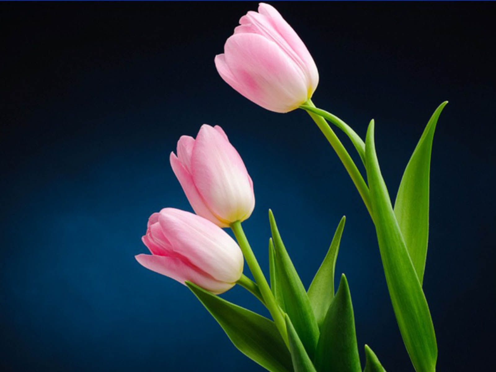
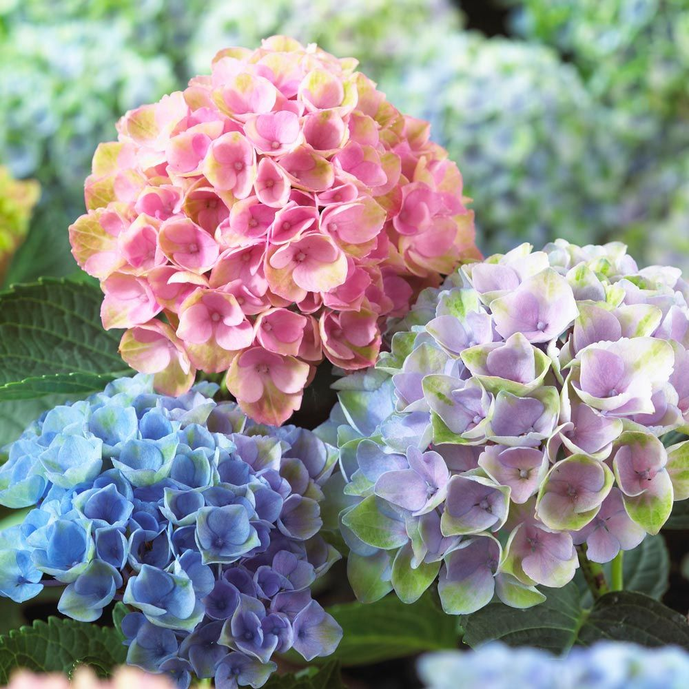

A tulip is a Eurasian and North African genus of perennial, bulbous plants in the lily family. It is a herbaceous herb with showy flowers, of which around 75 wild species are currently accepted. The genus's native range extends west to the Lberian Peninsula, through North Africa to greece, the balkans, turkey, throughout the levant and iran, north to ukraine, Southren Siberia and Mongolia and East of the North West of China.

Hydrangea is a genus of 70-75 species of flowering plants native to southern and eastern asia and the americas. by far the greatest species diversity is in eastern asia, notably china,japan and korea Having been introduced to the Azores, H. macrophylla is now very common, particularly on faial, which is known as the "blue island" due to the vast number of hydrangeas present on the island. The colour are white, but in some species can be blue, red, pink, light purple, or dark purple.